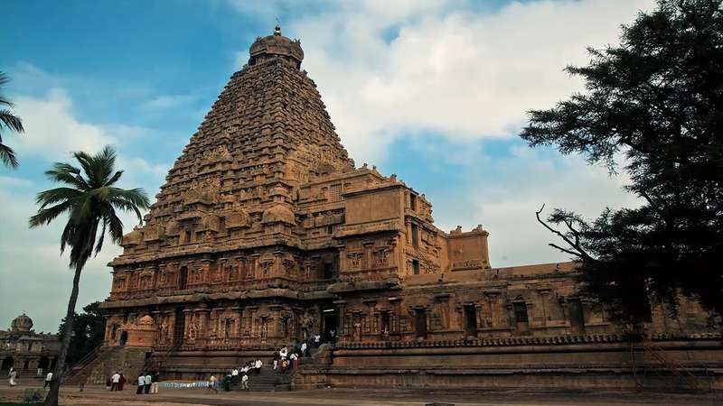

The eastern parts are fertile coastal plains and the northern parts are
a mix of hills and plains. The central and the south-central regions are arid plains and receive less rainfall than the other regions. Tamil Nadu has the country's third-longest coastline at about 906.9 km (563.5 mi).
Capital and Largest City: Chennai
Largest Metro: Greater Chennai Metropolitan
Country: India
Tamil Nadu- the land of Tamils is a state in Southern India known for its temples and architecture, food, movies and classical Indian dance and Carnatic music. The languages spoken here are predominantly Tamil (also written as Thamizh) and English in the larger cities and metro capital Chennai. Nearly 33,000 ancient temples, many at least 800 to 2000 years old, are found scattered all over Tamil Nadu. As per Tamil Nadu Hindu Endowments Board, there are 38,615 temples.
The land can be divided into five major physical divisions - the Kurinji or mountainous region, the Mullai or forest region, the Palai or arid region, the Marudham or the fertile plains and the Neidhal or coastal region.
Tamil Nadu is divided naturally between the flat country along the eastern coast and the hilly regions in the north and west. The broadest part of the eastern plains is the fertile Kaveri (Cauvery) River delta; farther south are the arid flatlands surrounding the cities of Ramanathapuram and Madurai (Madura).
Temple gopurams, the strains of classical music, reverberating dance and ancient sites like Thanjavur still throbbing with an invisible life greet the pilgrims and tourists alike. For many others, the long coastline and the fabulous hill stations make Tamil Nadu famous.

#1 Sambar-is a lentil-based vegetable stew/porridge/soup, cooked with pigeon pea and tamarind broth.
#2 Puliyodarai-Puliyogare or Tamarind Rice is a tangy-spicy South Indian Rice variety, which is known for its long shelf life and great travel food. This dish is also rich in protein and fibre.
#3 Paruppu Payasam.
#4 Pollachi Nandu Fry.
#5 Rasam.
#6 Mutton Kola Urundai.
#7 Chicken Chettinad.
#8 Filter Kaapi.
#9 Pongal.
#10 Murukku.